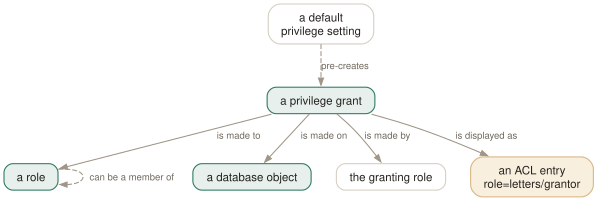

Day 04
Functions and privileges
The other half of the describe family, and how to read an ACL entry without guessing.
By the end of today you can
- find a function by name and by the types of its arguments, and read its source without leaving psql
- read a privilege grid letter by letter, including what an empty one means
- say where role membership went, now that
\duno longer shows it
Finding a function you cannot quite name
\df takes the grammar from yesterday and adds something no other describe command has: extra arguments that match argument types, positionally. That turns “what was the function that takes a text and an interval” from a catalogue query into one line.
The first argument is a name pattern; every argument after it is a type-name pattern for the first, second, third parameter and so on. Matching functions may take more arguments than you listed — write a dash as the last pattern to forbid that.
testdb=# \df int*pl * bigint
List of functions
Schema | Name | Result data type | Argument data types | Type
------------+---------+------------------+---------------------+------
pg_catalog | int28pl | bigint | smallint, bigint | func
pg_catalog | int48pl | bigint | integer, bigint | func
pg_catalog | int8pl | bigint | bigint, bigint | func
(3 rows)
The Type column classifies each result as agg, normal, proc, trigger or window, and the letters a, n, p, t, w filter to just those kinds. So \dfp is “list the procedures”, and \dft answers “which trigger functions exist in this database” without a join.

\dp prints is one ACL entry per grantee, and the amber box is where the reading goes wrong: an empty column is not an ACL that grants nothing, it is the absence of an ACL, meaning the built-in defaults still apply. The self-aspect on “a role” is why membership needs its own listing — it carries three options and a grantor of its own, so \du could not sensibly show it in a column.Reading the source without leaving the prompt
\sf prints a function's definition as a CREATE OR REPLACE FUNCTION statement, and \sf+ numbers the lines — counting from the first line of the body, not of the statement:
testdb=# \sf+ addone
CREATE OR REPLACE FUNCTION public.addone(integer)
RETURNS integer
LANGUAGE sql
1 AS $function$SELECT $1+1$function$
That numbering is the point of the +: when PostgreSQL reports an error at “line 12 of the function”, those are the numbers it means. \sv does the same for a view.
The editing pair, \ef and \ev, fetch the same text into your editor and re-run it on save — so fixing a function is a round trip of \ef myfunc, edit, save, quit. Day 7 sets your editor up properly. With no argument, \ef gives you a blank CREATE FUNCTION template.
The privilege grid, letter by letter
\dp (identically, \z) is the command everyone runs and nobody reads, because the Access privileges column is a dense little language. It is one entry per grantee, of the form role=letters/grantor:
testdb=# \dp my_table
Access privileges
Schema | Name | Type | Access privileges | Column privileges | Policies
--------+----------+-------+----------------------------+-------------------+----------
public | my_table | table | postgres=arwdDxtm/postgres+| |
| | | analysts=r/postgres | |
(1 row)
Three things to decode, and then it is readable for life. The letters, for a table:
r- SELECT — think read
a- INSERT — think append
w- UPDATE — think write
d- DELETE
D- TRUNCATE
x- REFERENCES — may point a foreign key at it
t- TRIGGER
m- MAINTAIN — may VACUUM, ANALYZE, REINDEX and friends
So arwdDxtm is the complete set, which is what an owner has. A * after a letter means that privilege carries WITH GRANT OPTION — analysts=r*w/alice is “select and update, may pass the select on, granted by alice”. And an empty grantee, as in =r/postgres, is PUBLIC.
The Column privileges column is separate because column-level grants are separate. A table with GRANT SELECT (customer) and nothing else has an empty Access privileges column and a populated Column privileges one — which is easy to skim straight past.
Roles, membership, and settings that follow them around
\du lists roles and their attributes — the things a role is, rather than what it may touch: superuser, create role, create db, replication, bypass RLS, and “Cannot login” for a role with NOLOGIN.
testdb=# \du
List of roles
Role name | Attributes
-----------+------------------------------------------------------------
analysts | Cannot login
postgres | Superuser, Create role, Create DB, Replication, Bypass RLS
reporter |
testdb=# \drg
List of role grants
Role name | Member of | Options | Grantor
-----------+-----------+--------------+----------
reporter | analysts | INHERIT, SET | postgres
(1 row)
Two more in this corner of the family, both worth knowing exist. \ddp lists default privileges — the ALTER DEFAULT PRIVILEGES settings that quietly pre-grant things on every object created in a schema, and the reason grants sometimes “come back”. And \drds lists settings pinned to a role or a database by ALTER ROLE ... SET or ALTER DATABASE ... SET, which is where an inexplicable statement_timeout usually turns out to live.
Finally \dconfig, which is not about privileges but belongs to the same habit of asking the database about itself. With no pattern it shows only the parameters set to non-default values — a two-minute way to learn what is unusual about a server you have just been given. \dconfig * shows all of them; \dconfig+ work_mem adds the type, the context in which it can be changed, and any granted privileges.
Today's habit
When somebody asks “can this service read that table”, stop reasoning about it and run \dp and \drg. Two commands, and the answer includes the grant option and the grantor, which is more than the person asking wanted and exactly what the audit will.
Tomorrow: making psql's output readable, which is the day that changes how the tool feels.
New vocabulary
Commands
| Command | Does |
|---|---|
\df pattern | Functions, with result type, argument types and kind. |
\df pattern t1 t2 | Extra arguments are type patterns, matched positionally. |
\sf name | The function's source as CREATE OR REPLACE. \sf+ numbers the body. |
\sv name | The same for a view. \ev and \ef edit rather than show. |
\du | Roles and their attributes. \dg is the same command. |
\drg | Role grants: who is a member of what, with ADMIN/INHERIT/SET. |
\dp | Access privileges on tables, views and sequences. \z is the same command. |
\ddp | Default privileges — what future objects will be created with. |
\dconfig | Server parameters set to non-default values. \dconfig * for all of them. |
\drds | Settings attached to a role, a database, or the pair. |
\dT \do \da | Types, operators and aggregates — same grammar, rarer questions. |
Options
| Option | Does |
|---|---|
a n p t w | Function-kind filters for \df: aggregate, normal, procedure, trigger, window. |
Drillsdo these in a real terminal, today
Self-check
Answer out loud first, then unfold.
\dp orders shows an empty Access privileges column. A colleague concludes that nobody can read the table, including its owner. Where did they go wrong?
An empty column means the object still has its built-in default privileges, which for a table is “the owner has everything, nobody else has anything”. It is the absence of an explicit ACL, not an ACL granting nothing.
The moment anyone runs a single GRANT or REVOKE on the object, the whole ACL materialises — including the owner's own postgres=arwdDxtm/postgres row, which was implicit before and is now written down. So the column going from empty to long does not mean access widened.
You need to know whether reporter inherits the privileges of analysts. \du reporter shows an empty Attributes column and no mention of analysts. Where is the information?
\drg, which lists role grants: Role name, Member of, Options and Grantor. The Options column is the answer to your actual question — INHERIT means privileges flow automatically, SET means the role can SET ROLE to it, ADMIN means it can grant the membership onward.
\du used to carry a “Member of” column and no longer does; membership became rich enough (three independent options, and a grantor) to need a listing of its own. If you learned psql before that split, this is the change most likely to trip you.
What does analysts=r*w/alice tell you, in words?
The role analysts has SELECT (r, for read) and UPDATE (w, for write) on this object; the * says the SELECT was given WITH GRANT OPTION, so analysts may pass it on; and alice is the role that granted all of it.
The full alphabet for a table is a insert (append), r select (read), w update (write), d delete, D truncate, x references, t trigger, m maintain. An owner with everything reads arwdDxtm.
A newly created table in schema app already grants SELECT to a role you did not mention. Nobody ran a GRANT. What happened, and which command shows it?
Somebody ran ALTER DEFAULT PRIVILEGES for that schema, so every table created there afterwards is born with that grant already applied. \ddp lists exactly these — owner, schema, object type, and the privileges future objects will get.
It is worth checking on any database where “the grants keep coming back”. Default privileges are attached to the creating role as well as the schema, so two people creating tables in the same schema can produce differently-permissioned tables.
Cheat sheet
Privilege letters for a table. Owner with everything reads arwdDxtm.
\df pat -- functions \df pat t1 t2 -- match argument types positionally
\dfa \dfn \dfp \dft \dfw -- aggregate / normal / procedure / trigger / window
\sf name -- source \sf+ numbers lines FROM THE BODY (line 1 = body line 1)
\du -- roles + attributes only \drg -- membership: ADMIN/INHERIT/SET
\dp \z -- access privileges \ddp -- privileges future objects get
\dconfig -- non-default server parameters \drds -- settings pinned to role/db
-- ACL entry: role=letters/grantor * after a letter = WITH GRANT OPTION
-- r select(read) a insert(append) w update(write) d delete D truncate
-- x references t trigger m maintain
-- role= with nothing on the left is PUBLIC
-- EMPTY column = no ACL yet = built-in defaults (owner all, others none), NOT "no access"
Everything through Day 04
Keys
| Key | Does |
|---|---|
| C-c | Abandon the line you are typing and empty the query buffer. |
| C-d | End the session — but only when the buffer is empty. |
Commands
| Command | Does |
|---|---|
psql | Connect with the defaults and start an interactive session. |
; | Dispatch the buffer. Not a meta-command — SQL's own statement terminator. |
\g | Dispatch the buffer, exactly as a semicolon does. |
\p | Print the buffer without sending it. \print in full. |
\r | Reset: throw the buffer away. \reset in full. |
\e | Edit the buffer in $EDITOR; on exit it is re-parsed and run. |
\w file | Write the buffer to a file instead of sending it. |
\; | Append a semicolon to the buffer without dispatching it. |
\? | Every meta-command, in twelve groups. 121 of them in 18.6. |
\h SELECT | Syntax for one SQL command. \h alone lists what it knows. |
\q | Quit. |
\c dbname | Reconnect to another database, reusing host, port and user. |
\c - user | Reconnect as another user. A dash means “leave that one as it is”. |
\c -reuse-previous=on ... | Merge a conninfo string onto the current parameters. |
\conninfo | A twelve-row table describing the live connection. |
\password | Change a password without it reaching your history or the server log. |
\encoding | Show the client encoding, or set it. |
\d | Bare: tables, views, materialized views, sequences and foreign tables. |
\d my_table | Describe one relation: columns, types, nullability, defaults, indexes, constraints. |
\d+ my_table | Adds storage, compression, stats target and per-column comments. |
\dt | Tables. The letters combine — \dti lists tables and indexes. |
\di \dv \dm \ds \dE | Indexes, views, materialized views, sequences, foreign tables. |
\dn | Schemas. \dn+ adds permissions and comments. |
\l | Databases, with owner, encoding, locale provider and privileges. |
\dP | Partitioned tables and indexes; add n to include non-root ones. |
\dx | Installed extensions; \dx+ lists everything each one owns. |
\df pattern | Functions, with result type, argument types and kind. |
\df pattern t1 t2 | Extra arguments are type patterns, matched positionally. |
\sf name | The function's source as CREATE OR REPLACE. \sf+ numbers the body. |
\sv name | The same for a view. \ev and \ef edit rather than show. |
\du | Roles and their attributes. \dg is the same command. |
\drg | Role grants: who is a member of what, with ADMIN/INHERIT/SET. |
\dp | Access privileges on tables, views and sequences. \z is the same command. |
\ddp | Default privileges — what future objects will be created with. |
\dconfig | Server parameters set to non-default values. \dconfig * for all of them. |
\drds | Settings attached to a role, a database, or the pair. |
\dT \do \da | Types, operators and aggregates — same grammar, rarer questions. |
Options
| Option | Does |
|---|---|
-h -p -U -d | Host, port, user, database. -d also takes a whole conninfo string. |
-w -W | Never prompt for a password / always prompt. Both persist across \c. |
-l | List databases and exit. Connects to postgres unless told otherwise. |
PGHOST PGPORT PGUSER PGDATABASE | libpq's defaults for the four parameters. |
PGPASSFILE | The password file. Default ~/.pgpass, and it must be mode 0600. |
PGSERVICEFILE | Named connection recipes. Default ~/.pg_service.conf. |
S | Include system objects: \dtS. Supplying any pattern does this too. |
+ | More columns — and a size lookup per relation, so it is not free. |
x | Expanded output for this listing only. Goes after S or +, never straight after \d. |
a n p t w | Function-kind filters for \df: aggregate, normal, procedure, trigger, window. |